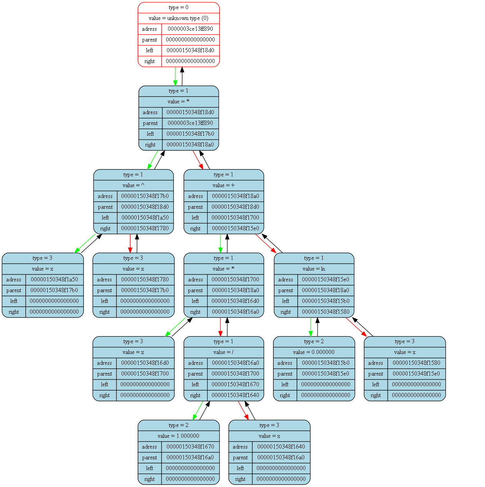

<pre>
<pre>

Tree dump from (int main()) at (main.cpp) at line (15):
tree [0000003ce13ff910] "&func_tree" at (int main()) at (main.cpp)(12):
{
	status   = 1
	error    = 0
	size     = 3

	((x)^(x))
}
<pre>

Tree dump from (void GeneratePdf(Tree_t*)) at (dif.cpp) at line (198):
tree [0000003ce13ff860] "&der_tree" at (void GeneratePdf(Tree_t*)) at (dif.cpp)(192):
{
	status   = 1
	error    = 0
	size     = 13

	(((x)^(x))*(((x)*((1.000000)/(x)))+((0.000000)ln(x))))
}
